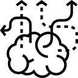

The tools I use to
Explore, Create, and Learn
My creative process is always evolving, here are a few tools that I use.
- 
-

-

-

Explore
Seen further and experience what matters
Levels of Research I've conducted
Micro
"Boots on the ground"
Through digital and analog methods I've found great value in connecting with people on a personal level. I often conduct user research through interviews, observations, testing (Moderated, and Unmoderated), and through 1st hand experience.
ObservationsInterviewsTesting
Macro
"Birds Eye View"
To understand network behaviors I try to study quantitative data to identify statistical significance and groupthink. Larger data sets are great for conducting analogous research when linear studies are not viable.
SurveysStatisticsA/B Testing
Market
"Network Relationship View"
As products and experiences expand domain knowledge is vital. Through competitor analysis, market research, and focus groups I've be able to clarify and priorities features, white space, and new business opportunities.
Business ModelingCompetitor Analysis
Collaborate & Critic
Brainstorm, Feedback, and Iterate
Facilitation and workshops I lead
Design Studio
"Group Ideation and Concepting"
By bringing my team, clients, users, and other SME together we're able to educate all stakeholders on the process and how they might be able to contribute, whether through idea-storming, group sketching, mapping exercises, etc. It's this group effort that brings all insights into the process early on.
CardboardPost-itsPens
Empathy Mapping
"Get closer to your user"
Understanding your users needs, influencers, and behaviors is vital to tailoring the experience around their needs and the business. By mapping out what they're seeing, hear, saying, and doing we're able to peer inside the emotional and subconscious drivers which cause the user to act a certain way.
Qualitative ResearchPersona Mapping
Synthesis
"Grouping and Prioritizing"
Once a certain volume of ideas is reached sort and group ideas or concepts into similar groups as a team. Categorize the groups and prioritize them based on needs from the stakeholders. Aim for at least 3 priorities which can be the foundation of the experience.
Thematic Sorting
Create
Design, Code, and Craft
Tools I built with
Digital Fabrication
UI / UX / Code
When creating a digital UX I might begin with concept sketching which translates to wireframing. At this point iteration begins with collecting user feedback. Once design patterns and loops are flushed out, visual language and identity is tailored through visual design. By creating mockups, prototyping begins via InVision, or frontend code.
SketchAdobe (PS, IL)InVisionHTML5 & CSS3
Hardware
3D / DFM / Manufacturing
When creating objects in a physical medium I start with a hand drawn sketch which is translated into 3D space via surface & nurbs modeling in rhino or solidworks. After which mechanical assemblies, and simulations can begin. Manufacturing begins by BOM costing, and producing part drawings for tooling and fabrication.
RhinoSolidworks
System Modeling / Service Design
Service and Business Blueprinting
There are many components to a service and business. In order to understand dependencies, and process I've found it very helpful to model a system from the top down. Through service blueprinting we're able to document the mechanical framework of a service to identify points of optimization.
Service & Business BlueprintImpact Matrix
Learn
The Bleeding Edge
What I'm hoping to learn
App Development
With the ability to create dynamic and data driven products I'll be able to take an idea from concept to functional prototype. I'm excited to connect the front and the back.
JSReact.jsFramer.js
Machine Learning / Ai
After working with the IDEO CoLab I learned how powerful ML models can be in predicting future behaviors. Personalization is the gold standard for digital product today, I want to explore and build around these use cases.
AnacondaRNeural Networks
Social Network Science
I'm fascinated by social networks and the impact they can have on communities. I want to understand the positive and negative effects of networks.
EpidemiologySocial Engineering